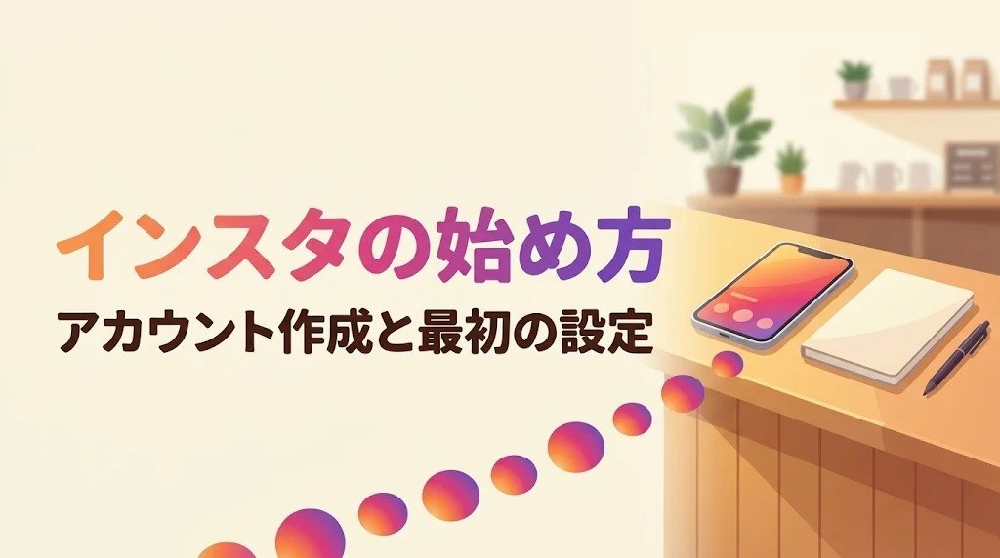
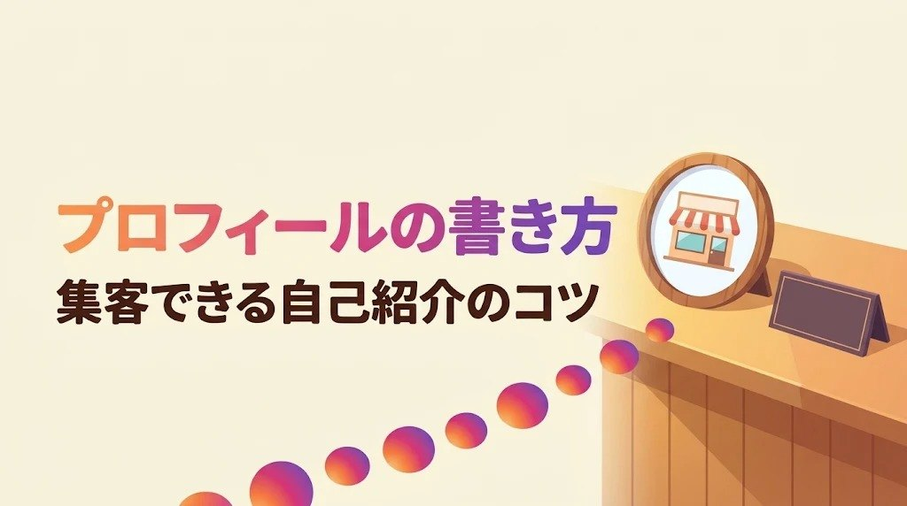
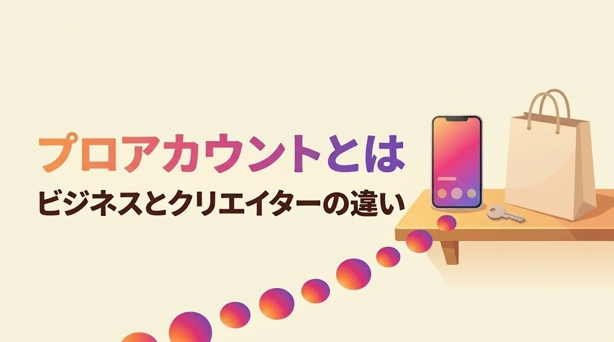
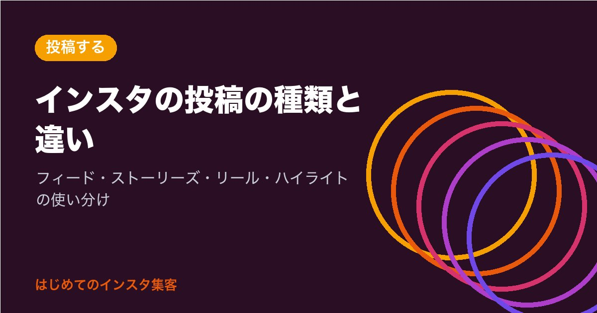
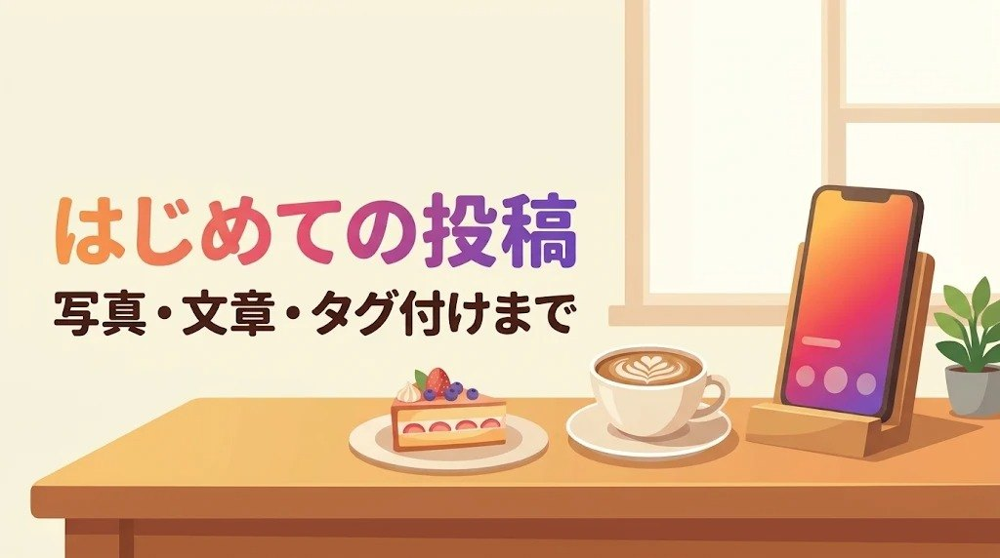
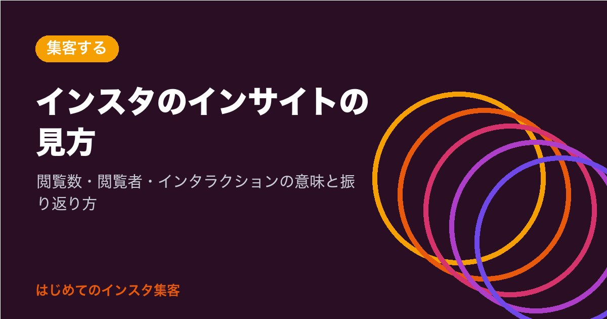
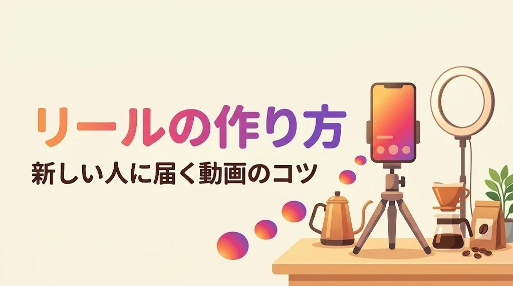
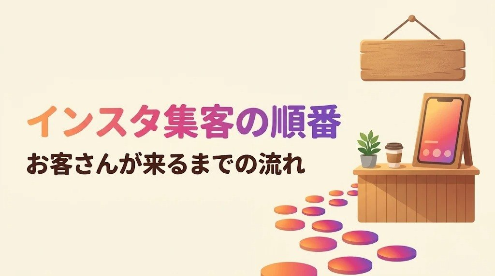
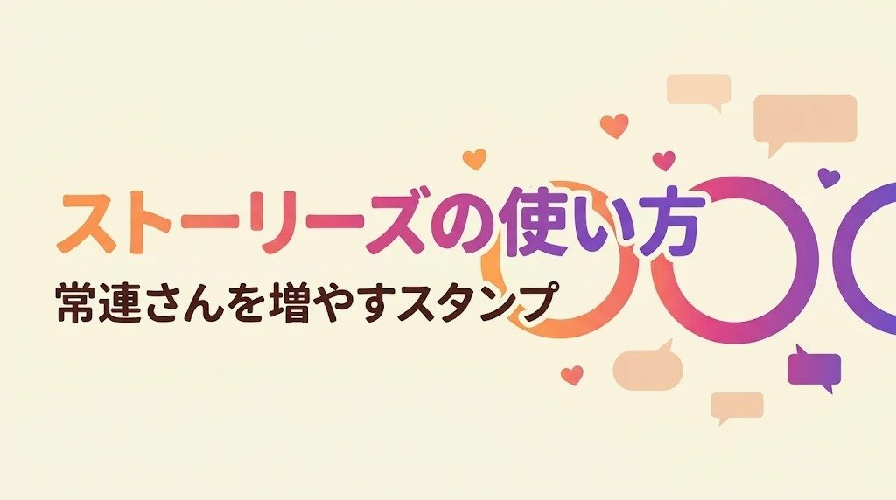

はじめてのインスタ集客
インスタは、
順番どおりなら迷わない。
アカウント作りから、お店やサービスにお客さんが来るまで。やることを10のステップに並べました。上から順に読むだけで、今日やることが分かります。
- 1アカウントを作る登録と最初の設定
- 2プロフィールを書く名前・自己紹介・リンク
- 3プロアカウントにする無料で数字が見える
- 4投稿の種類を知るフィード・ストーリーズ・リール
- 5はじめて投稿する写真・文章・タグ付け
- 6ハッシュタグを付ける見つけてもらう入り口
- 7リールを作る新しい人に届く動画
- 8ストーリーズで話すフォロワーと仲良くなる
- 9数字を見るインサイトで振り返る
- 10集客の順番を固めるお店・サービスにつなげる
いま読める記事：10本
はじめての方へ：まず読みたい記事

はじめる2026-11-13インスタの始め方｜はじめてでも迷わないアカウントの作り方と最初の設定
インスタ（Instagram）をほとんど触ったことがない人向けに、アカウントの作り方を1つずつ順番に解説。メール・電話番号・Facebookでの作り方、年齢の決まり、「名前」と「ユーザーネーム」の違い、お店用を分けて作る方法（最大10個まで切り替え）、お金はかかるのかまで、公式ヘルプで確かめた内容で分かります。

はじめる2026-11-13インスタのプロフィールの書き方｜はじめてでも書ける自己紹介150文字とリンクの入れ方
インスタのプロフィールの書き方を、はじめての人向けにやさしく解説。自己紹介は150文字まで、リンクは5つまで。名前の欄に入れる言葉、自己紹介に入れる4つのこと、カフェ・サロン・教室の例文、リンクの入れ方と並べ方、あとから直せるかまで、公式ヘルプで確かめた内容で分かります。

はじめる2026-11-13インスタのプロアカウントとは？無料でできる切り替え方とビジネス・クリエイターの違い
インスタのプロアカウントは無料で切り替えられます。お金がかかるのは広告を出す時だけ。ビジネスとクリエイターの違い、できるようになること、切り替えの手順、非公開にできない注意点、個人アカウントへの戻し方まで、はじめての人向けにやさしく説明します。

投稿する2026-11-13インスタの投稿の種類と違い｜フィード・ストーリーズ・リール・ハイライトをやさしく解説
インスタの投稿の種類（フィード投稿・カルーセル・ストーリーズ・ハイライト・リール・親しい友達）の違いを、はじめての人向けにやさしく整理。残るか消えるか、誰に届きやすいか、写真の枚数や縦横の比率、リールの長さ、お店での使い分けまで分かります。

投稿する2026-11-13インスタのはじめての投稿｜写真1枚と短い文章でできる、やさしい手順
インスタにはじめて投稿する人向けに、ボタンを押す順番から、写真の選び方、説明文（キャプション）の書き方の型、お店の場所の付け方、最初の3投稿に何を載せるかまで、ひとつずつやさしく解説。投稿は無料で、あとから直せることも多いので安心して始められます。
新着記事
インスタのはじめての投稿｜写真1枚と短い文章でできる、やさしい手順
インスタにはじめて投稿する人向けに、ボタンを押す順番から、写真の選び方、説明文（キャプション）の書き方の型、お店の場所の付け方、最初の3投稿に何を載せるかまで、ひとつずつやさしく解説。投稿は無料で、あとから直せることも多いので安心して始められます。
投稿する2026-11-13インスタのハッシュタグの付け方｜1投稿5個まで。はじめてでも迷わない選び方
インスタのハッシュタグを、はじめての人向けにやさしく解説。2025年12月から1つの投稿に付けられるのは5個までになりました。お店に合う5個の選び方、言葉の見つけ方、使える文字と使えない文字、非公開アカウントの注意点まで、公式ヘルプで確かめた内容で分かります。ハッシュタグは無料で付けられます。

集客する2026-11-13インスタのインサイトの見方｜数字が苦手でも月1回でわかる振り返り方
インスタのインサイト（数字を見る画面）の見方を、はじめての人向けにやさしく解説。閲覧数・閲覧者・インタラクション・新規フォロワーの4つの意味、見られる期間（過去90日）、フォロワー100人から見られる数字、月1回の振り返りの手順まで分かります。公開アカウントなら無料です。
はじめる2026-11-13インスタの始め方｜はじめてでも迷わないアカウントの作り方と最初の設定
インスタ（Instagram）をほとんど触ったことがない人向けに、アカウントの作り方を1つずつ順番に解説。メール・電話番号・Facebookでの作り方、年齢の決まり、「名前」と「ユーザーネーム」の違い、お店用を分けて作る方法（最大10個まで切り替え）、お金はかかるのかまで、公式ヘルプで確かめた内容で分かります。
はじめる2026-11-13インスタのプロアカウントとは？無料でできる切り替え方とビジネス・クリエイターの違い
インスタのプロアカウントは無料で切り替えられます。お金がかかるのは広告を出す時だけ。ビジネスとクリエイターの違い、できるようになること、切り替えの手順、非公開にできない注意点、個人アカウントへの戻し方まで、はじめての人向けにやさしく説明します。
はじめる2026-11-13インスタのプロフィールの書き方｜はじめてでも書ける自己紹介150文字とリンクの入れ方
インスタのプロフィールの書き方を、はじめての人向けにやさしく解説。自己紹介は150文字まで、リンクは5つまで。名前の欄に入れる言葉、自己紹介に入れる4つのこと、カフェ・サロン・教室の例文、リンクの入れ方と並べ方、あとから直せるかまで、公式ヘルプで確かめた内容で分かります。
はじめるはじめるの記事をすべて見る（3）
インスタの始め方｜はじめてでも迷わないアカウントの作り方と最初の設定
インスタ（Instagram）をほとんど触ったことがない人向けに、アカウントの作り方を1つずつ順番に解説。メール・電話番号・Facebookでの作り方、年齢の決まり、「名前」と「ユーザーネーム」の違い、お店用を分けて作る方法（最大10個まで切り替え）、お金はかかるのかまで、公式ヘルプで確かめた内容で分かります。
はじめる2026-11-13インスタのプロアカウントとは？無料でできる切り替え方とビジネス・クリエイターの違い
インスタのプロアカウントは無料で切り替えられます。お金がかかるのは広告を出す時だけ。ビジネスとクリエイターの違い、できるようになること、切り替えの手順、非公開にできない注意点、個人アカウントへの戻し方まで、はじめての人向けにやさしく説明します。
はじめる2026-11-13インスタのプロフィールの書き方｜はじめてでも書ける自己紹介150文字とリンクの入れ方
インスタのプロフィールの書き方を、はじめての人向けにやさしく解説。自己紹介は150文字まで、リンクは5つまで。名前の欄に入れる言葉、自己紹介に入れる4つのこと、カフェ・サロン・教室の例文、リンクの入れ方と並べ方、あとから直せるかまで、公式ヘルプで確かめた内容で分かります。
投稿する投稿するの記事をすべて見る（4）
インスタのはじめての投稿｜写真1枚と短い文章でできる、やさしい手順
インスタにはじめて投稿する人向けに、ボタンを押す順番から、写真の選び方、説明文（キャプション）の書き方の型、お店の場所の付け方、最初の3投稿に何を載せるかまで、ひとつずつやさしく解説。投稿は無料で、あとから直せることも多いので安心して始められます。
投稿する2026-11-13インスタのハッシュタグの付け方｜1投稿5個まで。はじめてでも迷わない選び方
インスタのハッシュタグを、はじめての人向けにやさしく解説。2025年12月から1つの投稿に付けられるのは5個までになりました。お店に合う5個の選び方、言葉の見つけ方、使える文字と使えない文字、非公開アカウントの注意点まで、公式ヘルプで確かめた内容で分かります。ハッシュタグは無料で付けられます。

投稿する2026-11-13インスタのリールの作り方｜動画がはじめてでも、スマホ1つで作れる
インスタのリール（縦長の短い動画）の作り方を、はじめての人向けにやさしく解説。長さの決まり（最大20分、新しい人に届けるなら3分以内）、作りやすいネタ、ボタンを押す順番、おすすめに出にくい動画、トライアルリール、無料の編集アプリ Edits、お金はかかるのかまで分かります。
集客する集客するの記事をすべて見る（3）
インスタのインサイトの見方｜数字が苦手でも月1回でわかる振り返り方
インスタのインサイト（数字を見る画面）の見方を、はじめての人向けにやさしく解説。閲覧数・閲覧者・インタラクション・新規フォロワーの4つの意味、見られる期間（過去90日）、フォロワー100人から見られる数字、月1回の振り返りの手順まで分かります。公開アカウントなら無料です。

集客する2026-11-13インスタ集客のやり方と順番｜はじめてでもお客さんが来るまでの6つの流れ
インスタ集客のやり方を、はじめての人向けにやさしく順番どおりに整理しました。届けたい相手を決める、プロフィールを入り口にする、リールで知ってもらう、ストーリーズで仲良くなる、DMや予約につなげる、数字で直す。6つの流れと、やらない方がいいこと、1か月の進め方まで分かります。お金をかけずに始められます。

集客する2026-11-13インスタのストーリーズの使い方｜24時間で消える投稿で、常連さんと仲良くなる
インスタのストーリーズ（24時間で消える投稿）の使い方を、はじめての人向けにやさしく解説。出し方の順番、アンケート・質問などのスタンプ、日本では使えない場合がある機能、ハイライトでプロフィールに残す方法、親しい友達の使い方、毎日のネタ、お金はかかるのかまで分かります。